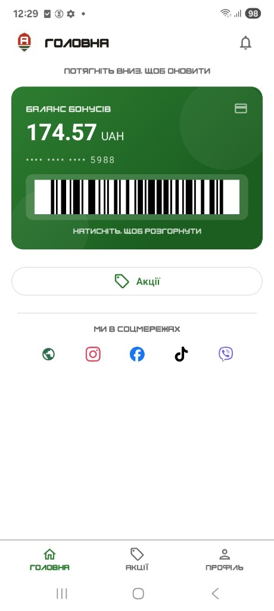
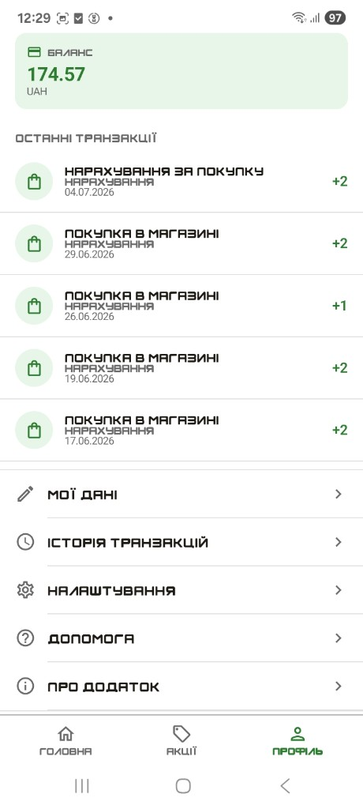
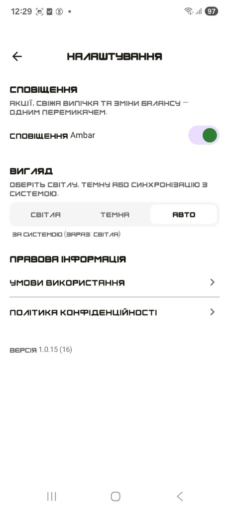

Повний контур production для retail: каса → API / бот → Docker → адмінка → моніторинг. Паралельно — market engines (sniper / copy-trading) з paper-first і ризик-гейтами. AI лише на реальних даних.
Бекграунд: довго працював оператором комп’ютерного набору — фізичний прийом товару, прихід, розцінка, звіти, аналіз акцій, прорахунок чеків під розіграші, організація свят у магазинах.
Зараз: керую операційним контуром і будую під нього IT (накладні/EDIN, боти замовлень, звіти, акції Happy Day, SMS/Viber) — один контур від полиці до системи.
Sales Bot (ready demo)
FastAPITelegramDockerDemo
Задача: готове клікабельне демо sales-сценарію: каталог → замовлення → CRM, без очікування «зроблю з нуля».
Зробив: web-чат і адмінка; замовлення йде HTTP POST у mock CRM з логом відповіді. Live на Hetzner.
Задача: повний контур лояльності: каса 1С → API → адмінка + мобільний клієнт для покупця (баланс, штрихкод, акції).
Зробив: web-admin (чеки, категорії, інтеграція 1С) + Android-додаток Ambar Loyalty (Compose): картка з балансом і barcode, профіль/транзакції, налаштування й push. Статус: пілот / ще не в публічному проді.
Моніторинг чеківКатегорії

Android · головна / картка

Android · профіль

Android · налаштування
SMS / Viber розсилки для retail
TurboSMSSMSViberSender ID
Задача: офіційні канали сповіщень мережі — не «з сірого номера», а узгоджений відправник під бренд.
Зробив: подав і провів реєстрацію офіційного SMS-відправника та окремо офіційного Viber-відправника для retail-мережі; налаштував і проводив розсилки через TurboSMS — альфа-імена / sender ID, шаблони, робочі кампанії.
BI + хмара + корпоративний сайт
MetabaseNextcloudPHPHetzner
Задача: аналітика продажів/залишків, файловий контур команди й публічний сайт мережі.
Зробив: ETL → PostgreSQL → Metabase/PostgREST; Nextcloud + OnlyOffice; сайт з локатором магазинів (Maps) і CMS. Деплой і моніторинг на VPS.
Задача: низьколатентний sniper для BTC 5m Up/Down на Polymarket — спочатку paper, live лише після жорстких метрик готовності.
Зробив: окремий engine (`scalper`): стратегія й сигнали, paper ledger, live-gate (кількість угод / WR / t-stat / PnL), headless 24/7 на Hetzner, dashboard `/sniper`, CI-тести, безпечний режим без live за замовчуванням.
Polymarket copy-trading
PythonFastAPISQLiterisk limits
Задача: дзеркало угод лідерів з ризик-лімітами й аналітикою — інженерний контур, а не «купи все підряд».